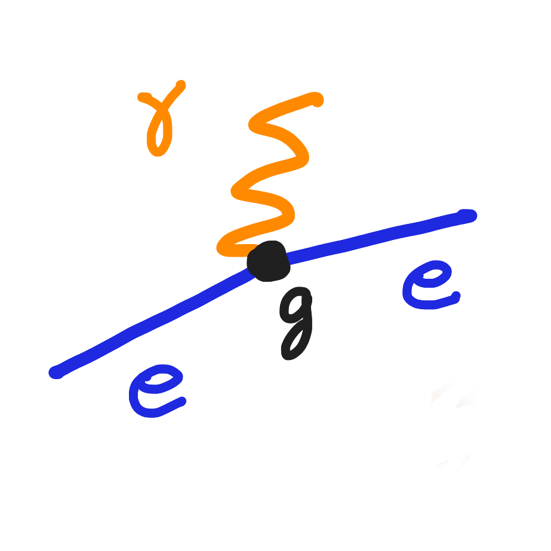
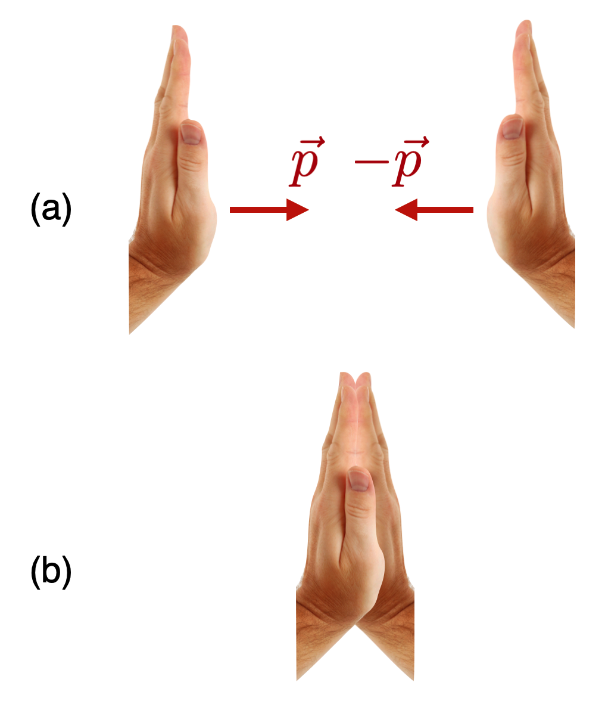

3.00 Collisions
Author: Chip Brock · Published: April 15, 2025

This is the first of three outlines of some basic physics ideas so that I can refer to them in other posts. If you’d like more, including history and examples, then visit full textbook for a textbook-level presentation.
1 Take-aways:
2 Simplest collision
There are only a few kinds of collisions. And, while I’ll maintain this general term, better is “interaction.” The context will be clear. I hope. 🙄
2.1 Scattering interactions
Think billiard balls. \[ \mathbf{A}+\mathbf{B}\to \mathbf{A}+\mathbf{B} \]
Some object (A) collides with some other object (B) and they go on their way. From your experience, you know that whatever motions A and B had before, those motions are now differently shared after. The only way that A and B are totally unscathed or affected is if they didn’t actually “interact”…like they were in separate rooms or states or planets, or they went through one another like ghosts. Not very good “collisions” in those silly examples.
“Before” and “After” in collision-land have specific names:
- The initial state of a system is the before.
- The final state of a system is the after.
There’s more. At the point of contact something happens. Dig in to that point where the action is…what do you visualize? Surfaces touching surfaces? If you hear the collision, then those surfaces are vibrating when they “click”… I’ll talk about this sort of thing in some future post. But the point is that the before and after include a “something happens” in the middle, where the physics happens. Usually, we want to know what goes on in that middle state.
A and B could be the same sort of object (like two billiard balls), they could be different objects (like a golf ball and a basketball). The rules don’t change, but the final states would be different.
2.2 Decay interactions
Here’s another kind, where “collision” might not be the best term, but the rules are the same. \[ \mathbf{C}\to \mathbf{A}+ \mathbf{B} \label{decay} \] Here our initial state consists of one thing and the final state consists of two different things. The easiest reaction (that’s a good, inclusive term) to visualize is a firecracker, C, that explodes into two fragments, B and C. Where you had a thing now you’ve got two things.
While that everyday example makes sense, for our purposes, this signifies something quantum mechanical in which case the process is an interaction, but more specifically a decay. For example in particle physics there are many examples of an unstable particle that decays into two other particles. We’ll create examples using the [Feynman Diagram techniques])https://chipbrock.github.io/FeynmanDiagramsEveryone/). For example, a Higgs boson can decay into two electrons. So-called Pi meson can decay into an electron and a neutrino. It goes on.
While I’m on to quantum mechanics processes, there’s another kind of scattering that’s a little odd.
2.3 Production interactions
\[ \mathbf{A}+\mathbf{B}\to \mathbf{C}+\mathbf{D} \label{production} \]
Think about this. You throw a baseball, A, at a bat, B, and the result of that collision is a beagle and a refrigerator. Same rules apply here as to the previous interactions as to how the dog and the fridge move after the collision, but here and in the decay that “in between” state is where the real action is: the how sports equipment becomes a pet and a home appliance.
So to the motion rules:
3 Conservation of momentum
Impulse is the key. This idea comes from Isaac Newton, Christiaan Huygens, and Rene Descartes. Let’s give them all a hand: 👏 . And after many years of applause, I’ll bet you’re pretty good at it.
A conserved quantity in physics is one that is unchanged during a time interval – typically a “before” and “after” some event. These statements are called “ConservationLaws.” There are many but the Conservation of Momentum is king of that hill.
Let’s manage that clap so that our identical hands have the same speeds, but oppositely-directed. So their velocities are equal and opposite. That means that their momenta are related. Here’s a picture:
Code
# #| out.width: “700px”
# #| column: screen
#| echo: false
knitr::include_graphics("clap.png")
Here’s the momentum for either one:
\[p(\text{hand}) = m(\text{hand})\times v(\text{hand})\].
They stopped dead…right in front of you. What happed to the momentum of the hands? Stopping dead is just a colorful way to say that they both lost their velocities and so they both lost their momenta.
Look at this example in order to see how we construct an important argument based on this lauditory expression of appreciation for our Dutchman. It’s based on an analysis of the impluse and out of it falls…Newton’s third law.
Here’s a way of organizing this. The total momentum of a system – is just the total of all of the momenta in that system. So our initial state’s momentum is: \[ \begin{align*}p(\text{total}) &=p(\text{left}) + p(\text{right}) \\ &= p - p \\ &= 0\end{align*} \] Do it. You’ll see that the result is that neither your right nor your left hand “win”…they stop in the middle, “dead”…which is our way of saying that the total momentum of that initial state is zero.
The understanding of this comes from a careful analysis of the situation and what impulse really means. Watch the video for an analysis.
EXAMPLE example_clap_1.md